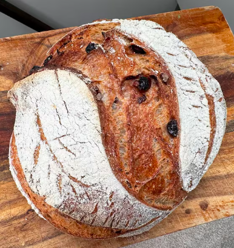

Cranberry Pecan Sourdough

Levain - mix 3-4 hours before bake
- 35g starter
- 35g warm water
- 35g bread flour
Ingredients
- 100g ripe levain
- 375g warm water
- 500g white bread flour
- 10g fine sea salt
Fillings
- 75g pecans - roughly chopped
- 90g craisins
Process
- Whisk levain and water together in large bowl with a fork.
- Add flour and salt, combine until stiff dough forms.
- Bulk rise, part 1 - Cover the bowl with damp towel and let rise at room temperature for 3.5 hours.
- Dump dough onto lightly floured surface.
- Line a 10-inch oval proofing basket with towel and dust with flour.
- Lamination - Gently stretch dough into long rectangle, lightly brush surface of dough with water.
- Evenly sprinkle 3/4 pecans and craisin mixture over the top, fold dough up and sprinkle remaining pecans and craisins.
- With short end facing you, roll dough into a log, pinching ends to seal. Place in basket, seam side up.
- Bulk rise, part 2 - Cover dough and let rest 1.5 hours.
- Place parchment over dough and turn basket to release onto paper.
- Cold fermentation - Cover dough and store in refrigerator overnight.
- Preheat dutch oven in oven for 30 minutes at 500 degrees
- Make 2-3 diagonal shallow cuts (scores) into surface of dough with small knife.
- Transfer into baking pot.
- Bake covered for 25 minutes at 450 degrees, then uncovered for 20 minutes.
- Remove loaf to wire rack and cool for 1 hour before slicing.